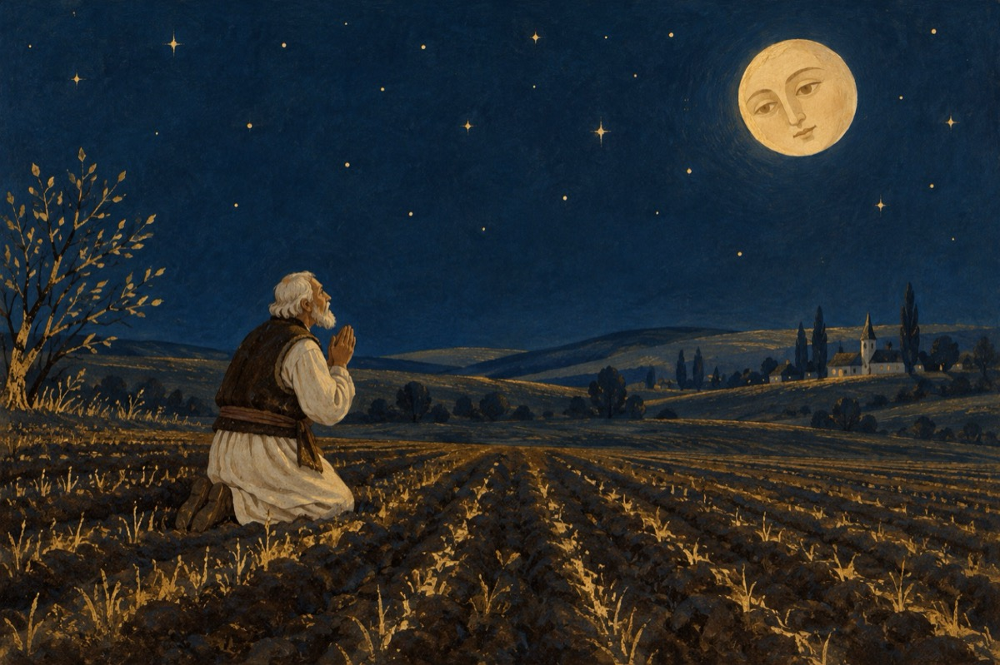

După noi potopul
Nu mai avem sărbători
Obiceiuri milenare
Nici nuntă, nici botez
Și nici înmormântare!
De tradiții ce să zic
S-a ales praful de ele
Au rămas fără-ombilic
COVID-19 și-a bătut joc și de ele
Lipsă dreptul la-ntrunire
Sărutul este o crimă
Prin poștalion iubire
Speranța-i doar o fărâmă!
Nu ai drept de spovedanie
De ai fost rău dovedit
Faci pe câmpuri rugăciune
Să îți ceri iertare, atât
Poți să mori ne-mpărtășit!
Asta a făcut și face 19 COVID!
Spitalele zac și ele
De atâta aiureală
Moartea stă după zăbrele
Și scoate morții afară
Nu ne mai plângem de școli
Orice casă e o școală
De copii neștiutori
Politicienii iau aceasta ca pe-o fală
Și se dau mari regizori!
Frica-i mare la partide
De a nu ne avea la vot
În carantine ne-ar închide
Cu purcel, cățel și cu toate la un loc!
După aia ce-o urma,
Dumnezeu cu mila!
Politicienii țin feștila!
Vasile Groza